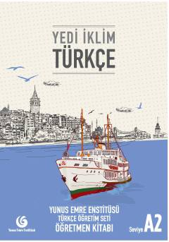

YİTurk tilini A2 darajasida o'qituvchilar uchun metodik qo'llanma.
Yunus Emre Enstitüsü tomonidan tayyorlangan ushbu o'qituvchi kitobi turk tilini chet tili sifatida o'rganuvchilar uchun A2 bosqichida dars beruvchi o'qituvchilarga metodik yordam berish maqsadida yaratilgan. Kitobda turli mavzular bo'yicha dars rejalari, mashqlar va grammatik tushuntirishlar o'rin olgan. O'qituvchilar uchun sinf xonasida qo'llashga qulay qo'llanma sifatida ishlab chiqilgan.